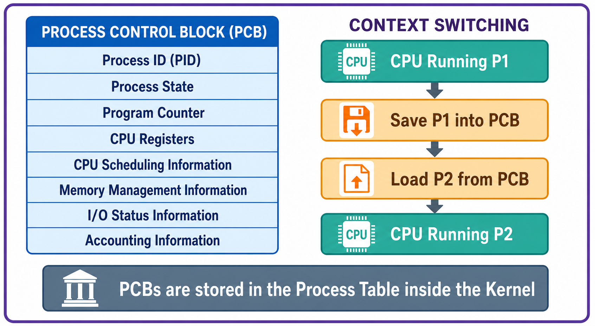

📘 OS Notes New
Computer Hub
← All sections
Practice Hub
/
Computer
/
OS Notes New
/ 2.D
SECTION 2 · SUBTOPIC 2.D
Process Control Block (PCB)
PCB contents, process table, process scheduling, and context switching.

Generated overview of PCB fields, kernel storage, and the save/load sequence during a context switch.
← Section overview
Back to top ↑